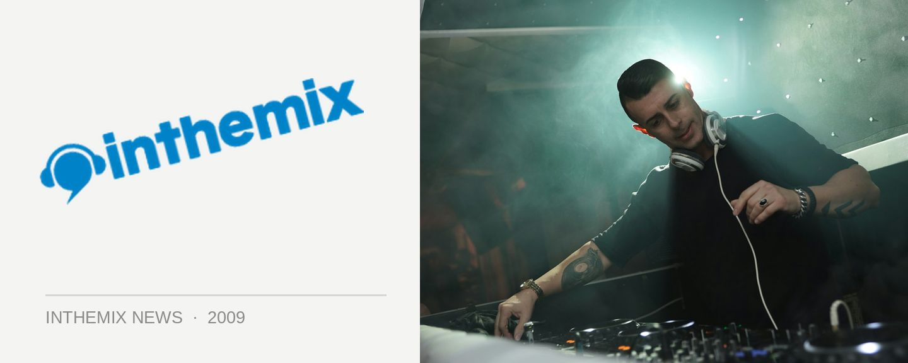

Armin returns this June Long Weekend
Has the dust even settled from your New Year shenanigans yet? If you caught Armin van Buuren at either Summafieldayze and Summadayze over the weekend then probably not, but for fans of the world’s #1 DJ the news just hitting the streets is that the Dutch enigma will be back for an Australian tour over the June Long Weekend.
Confirmed by Future Entertainment only on Thursday evening, the internet forums lit up immediatelywith the news that we’d be enjoying his presence over the June Long Weekend for the third year in a row. While in ‘07 we got the national ‘White Party’ tour, last year Sydney and Melbourne were treated to the epic ‘Armin Only’ parties that were marked down by many as the most memorable and exciting events of the year. There’s been whispers that in 2009 we’ll be getting more of a traditional club tour, but only time will tell.
How’s that for a surprise coming out of nowhere? Stay tuned to ITM for updates!